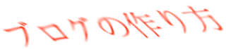
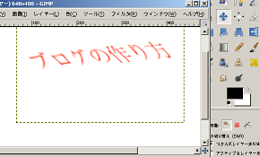

ブログロゴ作成の無料ツール
ブログロゴやバナー画像を作成する際の無料ツールはいろいろありますが、今回は GIMP という無料ツールを使って、タイトルバナーを作ってみました。
結論からいうと、できばえはこんな感じなんです。

GIMP には画像を加工するいろいろな機能がついているようなんで、使い慣れてくると、もっとかっこいいブログロゴも作成できるのではないかなと思います。
以前に、グーグル無料ツールのピカサでブログのアイコンバナーを作成してみたのですが、その時作ったちっちゃいバナーは当ブログの右上の方に貼り付けてます。
でも、どうもしっくりこなかったんで、GIMP を使ってブログのバナーを作成してみようと思った次第なんです。
GIMP は「ぎんぷ」って読むらしく、無料でダウンロードでき、パソコン上にインストールして使えます。
GIMP には、ブログロゴ作成のための画像を加工するさまざまな機能がついているようなのですが、操作方法が多少難しく、なれるまでには若干の時間がかかりそうです。

商用ホームページなどのバナー作成の場合、やはり自分である程度作ることができたら安上がりでいいと思うんですけど、作り方にもいろいろあるようです。
画像の色彩から文字スペースの割合、フォントのスタイルからサイトとの調和などいろいろ考えて作らないとかっこいいのが作れないようなんです。
割と、背景画像が白っぽいのを選択するとベターなんじゃないかなっていう気もしますが、今度はバナー画像の上手な作り方に関しても調べてみようと思います。
関連記事
- ブログのタイトルバナー画像の作り方
ブログ名やサイト名などブログの顔になるタイトルバナーですが、アイコンや画像を作成しておしゃれバナーを作成している人が多いようです。このブログでもいちおうはタイトルバナーをフッターに画像として作っている... - キャプチャー画像の作り方
初めてブログを作成する際、初心者さまにとってキャプチャー画像の作成を簡単にできると、とってもお役立ちなのではないかなと思います。キャプチャー画像っていうのは、スクリーンショットとも呼ばれていますが、今... - ブログにグラデーションな背景画像の作り方
ブログの背景画像をグラデーションなふいんきにする場合、無料ツールを使用しながらグラデーション素材を作成し、その背景画像をスタイルシートへと組み込めば、簡単にブログカスタマイズができます。 - 無料ブログにアイコン追加で記事作成
無料ブログで記事を作成するときに画像を挿入しているブログもときどき見かけます。記事タイトルの直下に挿入しているブログや簡単でシンプルなアイコンを挿入しているところもあったりとさまざまです。 - 無料画像のブログで使い方
ブログの画像を作るには、やっぱデジカメで写真をとってアップロードするっていうのが一番簡単かと思いますが、たいていの人は初心者というのが普通なんで、自分でとっても、逆光とかになってきたない画像しかとれな...